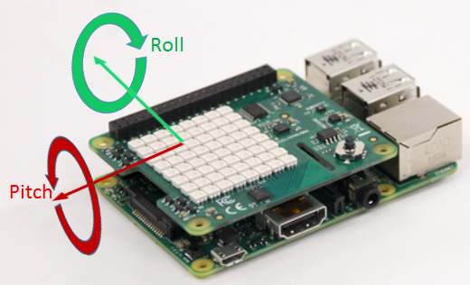

Controlling LEGO MINDSTORMS EV3 robot using Raspberry Pi Sense HAT
This example shows how to read the Accelerometer on Raspberry Pi Sense HAT and use this data to control the motion of a LEGO MINDSTORMS EV3 robot.
Contents
- Introduction
- Prerequisites
- Required Hardware
- Working Principle of Robot motion control
- Task 1 - Familiarize with Sense HAT Accelerometer (Recommended)
- Task 2 - Install Simulink Support Package for LEGO MINDSTORMS EV3
- Task 3 - Set up LEGO MINDSTORMS EV3 robot
- Task 4 - Configure Network Connection
- Task 5 - Run models on Raspberry Pi hardware and LEGO MINDSTORMS EV3 robot
- Other Things to Try
- Summary
Introduction
The Raspberry Pi Sense HAT is an add-on board for Raspberry Pi hardware. It has an 8X8 RGB LED Matrix, a five-position joystick and includes the following sensors:
- Humidity sensor
- Pressure sensor
- IMU sensor (Accelerometer, Gyroscope, and Magnetometer)
LEGO MINDSTORMS EV3 is a Linux based educational robot kit developed by the LEGO group. The Simulink Support Package for LEGO MINDSTORMS EV3 Hardware enables you to create and run Simulink models on LEGO MINDSTORMS EV3 hardware. The support package includes a library of Simulink blocks for configuring and accessing LEGO MINDSTORMS EV3 sensors and actuators.
We will develop two Simulink models,
- Raspberry Pi model In this model, we will read the Accelerometer On-board Sense HAT and use the acceleration data to determine the motor speeds for EV3 robot. A network connection would be setup between the Raspberry Pi device and the EV3 robot for data exchange.
- LEGO MINDSTORMS EV3 model In this model, we would receive the data sent by Raspberry Pi device and use this to drive the two motors of the EV3 robot.
You will learn how to:
- Set up network connection between Raspberry Pi hardware and LEGO MINDSTORMS EV3 robot
- Configure and run a Simulink model for Raspberry Pi hardware to send UDP packets to LEGO MINDSTORMS EV3 robot
- Configure and run a Simulink model for LEGO MINDSTORMS EV3 robot to receive UDP packets from Raspberry Pi hardware.
Prerequisites
- We recommend completing Getting Started with Raspberry Pi Hardware example.
Required Hardware
To run this example you will need the following hardware:
- Raspberry Pi hardware
- Raspberry Pi Sense HAT
- LEGO MINDSTORMS EV3
- Two LEGO MINDSTORMS EV3 Large Motors
- EV3 Wi-Fi Dongle
Working Principle of Robot motion control
In this section, we will discuss about how the acceleration data is used to control the motion of the robot.
From the Accelerometer data, we can mathematically determine the value of 'pitch' and 'roll' for a given position of the Sense HAT. We can map the 'pitch' and 'roll' movement of the Sense HAT to the motion of the EV3 robot. The 'pitch' would represent the forward and reverse motion of the motor whereas the 'roll' would represent the sideward motion of the robot.

The mathematical equations required to convert the 'pitch' and 'roll' values to linear speed of the motors are realized using a MATLAB function block in the Simulink model for Raspberry Pi.
A communication link for data exchange is set up between Raspberry Pi and the EV3 brick. The linear motor speed derived from the pitch and roll values is sent over UDP from Raspberry Pi to EV3. EV3 would receive this data and use it as input to drive the two motors.
Task 1 - Familiarize with Sense HAT Accelerometer (Recommended)
Sense HAT Auto-rotate example shows usage of the Accelerometer on the Raspberry Pi Sense HAT. The acceleration data is used to auto-rotate an image displayed on the LED matrix of Sense HAT.
Complete this example to get familiarity with the usage of Accelerometer.
Task 2 - Install Simulink Support Package for LEGO MINDSTORMS EV3
You need Simulink Support Package for LEGO MINDSTORMS EV3 to run Simulink model on LEGO MINDSTORMS EV3 hardware.
1. Install Simulink Support Package for LEGO MINDSTORMS EV3.
Click link below to
Download and Install Simulink Support Package for LEGO MINDSTORMS EV3
2. (Recommended) Complete the Getting Started with LEGO MINDSTORMS EV3 Hardware example in Simulink Support Package for LEGO MINDSTORMS EV3 you just installed.
Task 3 - Set up LEGO MINDSTORMS EV3 robot
In this task, we will build a EV3 robot and connect the EV3 brick to the same network as the Host PC.
1. Build a two-wheeled robot. You can build a robot similar to the one described in the printed building instructions in the education core set.
2. Set up a connection between EV3 brick and your host machine. Please refer to Task 1 and 2 in Getting Started with LEGO MINDSTORMS EV3 Hardware example.
Task 4 - Configure Network Connection
In this task, you will set up network connection between Raspberry Pi board and LEGO MINDSTORMS EV3. The communication protocol used in this example is UDP. You can alternatively use TCP/IP protocol. TCP/IP send/receive blocks are available in the library for LEGO MINDSTORMS EV3 and Raspberry Pi.
1. Connect Raspberry Pi board to the network with Ethernet cable through Ethernet port. Make sure that both the Raspberry Pi board and the EV3 robot are connected to the same network.
2. Verify the connection between your Raspberry Pi board and LEGO MINDSTORMS EV3.
Execute the following command on the MATLAB command prompt:
r = raspberrypi
This command returns an object with IP address info for the Raspberry Pi board.
Run command system(r, 'sudo ping [EV3_IP_Address] -c 10') with the LEGO MINDSTORMS EV3 IP address found in step 2 of Task 3 to verify the connection. e.g.
system(r, 'sudo ping 192.168.1.2 -c 10')
3. After verifying the connection, open the Raspberry Pi model and update Send to EV3 block with the IP address of your EV3 hardware.
Task 5 - Run models on Raspberry Pi hardware and LEGO MINDSTORMS EV3 robot
In this task, we will run the models that we have developed on the respective hardware.
1. Click Deploy to Hardware button of Raspberry Pi model to run this model on Raspberry Pi hardware.
2. Click Deploy to Hardware button of LEGO MINDSTORMS EV3 model to run this model on your LEGO MINDSTORMS EV3 hardware.
3. Control the EV3 robot using the Sense HAT connected to the Raspberry Pi hardware.
Other Things to Try
1. Improve the control system on the EV3 robot. Try incorporating a PID controller.
Refer to EV3 drive closed loop example and improve the control algorithm on the EV3 robot.
2. Develop a model to control the EV3 robot using the Joystick on Sense HAT. Use the Joystick block in the Sense HAT library to read the state of the Joystick on-board Sense HAT.
Summary
This example showcased the following
- Accelerometer on Raspberry Pi Sense HAT is used to control the motion of the EV3 robot.
- Raspberry Pi hardware calculates the value of speed for the left and right motors of the robot and sends the data to the EV3 brick through UDP send block.
- EV3 receives the data sent by Raspberry Pi and drives the motors of the robot.